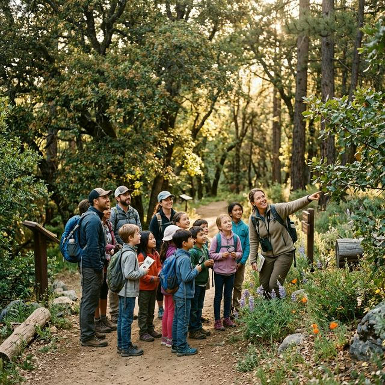

Education & Outreach
Connecting students to nature through guided hikes, citizen science, and hands-on stewardship on Volcan Mountain

Education-Outreach Program
The Volcan Mountain Foundation's Education Program offers a variety of education venues designed to instill a lasting sense of wonder and responsibility for the natural world.
VMF Outdoor Education
Age-appropriate curriculum aligned to California science standards for K–12
Young learners are introduced to Volcan Mountain's plant and animal communities through discovery-based activities that spark curiosity about the natural world.
Students explore habitat, water cycles, and tree ecology through hands-on lessons on the mountain and in the classroom.
Middle schoolers engage in real citizen science and develop conservation awareness through bird surveys, wilderness skills, and watershed investigations.
High schoolers tackle advanced topics in ecology and conservation, contributing meaningfully to VMF's ongoing scientific monitoring work.
Community Science
Real science, real contribution — for all ages
Multi-session program exploring the Santa Ysabel Creek headwaters and the crucial role Volcan Mountain plays in supplying water to San Diego County.
Learn MoreRecurring youth birdwatching club, supported by VMF's education team, introducing young people to the remarkable bird life of Volcan Mountain.
Join a SessionCan't make it to the mountain? Explore Volcan Mountain nature virtually — including our #12DaysofEarthDay series and online activities for younger students.
Explore OnlineWildcrafting & Youth Programs
VMF's Wildcrafting series explores the edible and medicinal plants of Volcan Mountain's oak forests. Workshops are hands-on and grounded in Indigenous knowledge traditions of the Iipay people who have lived in this landscape for thousands of years.
The VMF Wildcrafting Video series brings these lessons to a wider audience — whether you can join us on the mountain or not.
Book a Field Outing
Schedule a Volcan Mountain field outing by contacting VMF's Engagement Coordinator, Susan Meyer. We will try to meet your specific needs to support an introduction to nature for scout, family, service, and conservation organizations.